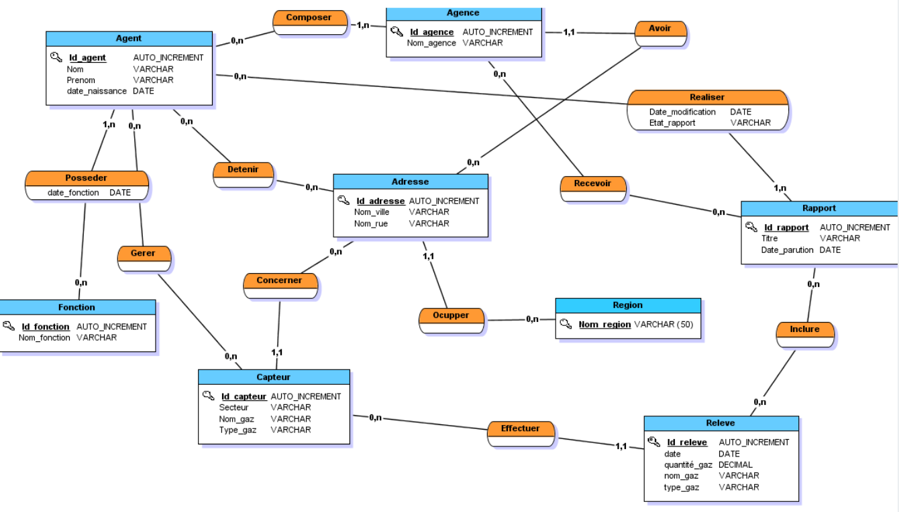
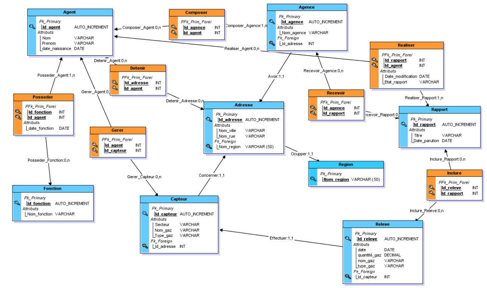
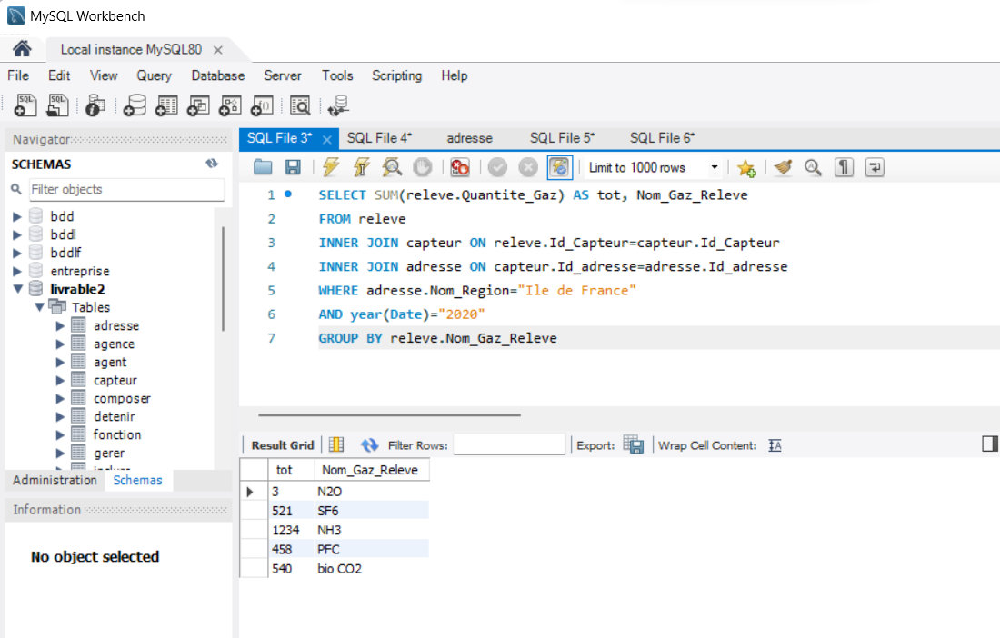

Ce projet consiste à créer une base de données MySQL pour stocker et analyser des relevés de la qualité de l'air dans différentes régions.

Le MCD illustre les entités principales et leurs relations pour modéliser les informations nécessaires à la gestion des relevés.

Traduction du MCD en une structure adaptée à la base de données relationnelle, détaillant les tables et leurs clés.

Exemple de requête utilisée pour obtenir la quantité de gaz relevée dans la région Île-de-France pour l'année 2020.